Гаспачо
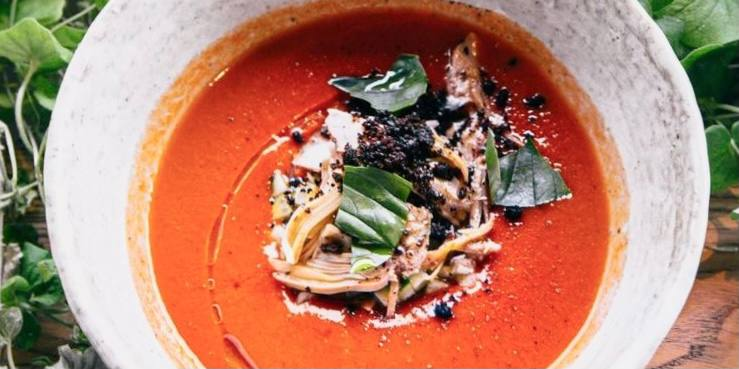Том Ям
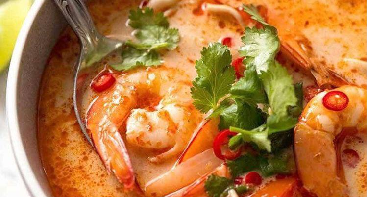Бограч
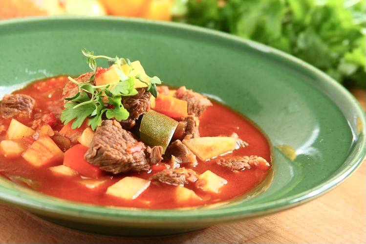Зеленый борщ
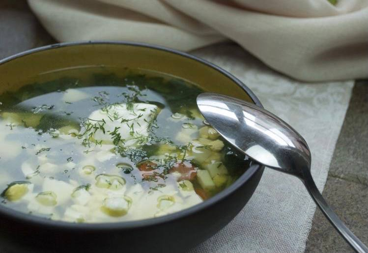Харчо
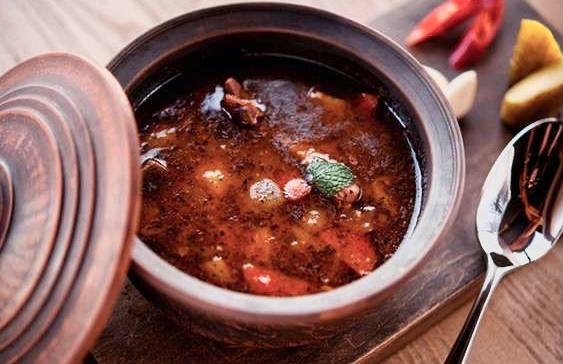Сливочно-грибной суп
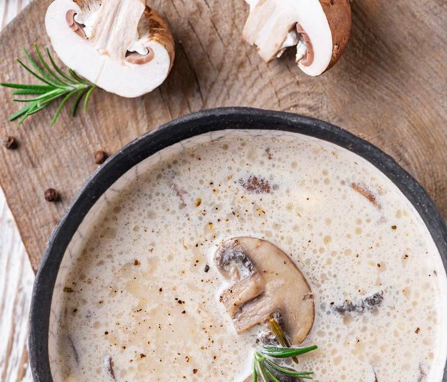Финский суп с сёмгой
Сырный суп
Манговый суп с креветками
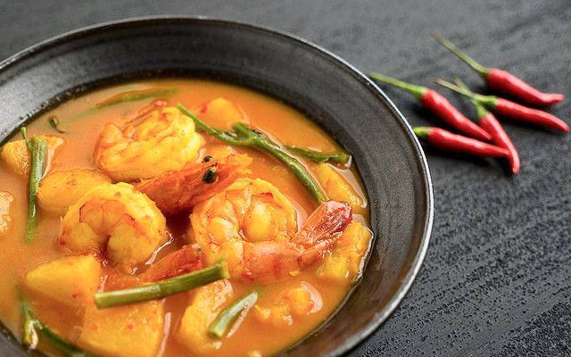Ингредиенты к рецепту:
2 больших томата
1 сладкий перец
2 веточки петрушки
3 зубчика чеснока
0,5 перца чили
2-3 веточки мяты
2 ст. л. оливкового масла
cоль и перец по вкусу
2 ст. л. бальзамического уксуса
3 ломтика хлеба
Приготовление блюда по рецепту:
Шаг 1. Берём 2 наших помытых томата и делаем крестообразный надрез снизу каждого. Можно экспериментировать и брать разные сорта, главное, что бы томаты были спелыми, сочными и имели минимальное количество семян.
Шаг 2. В кипящую воду опускаем наши томаты, примерно на 2 минуты, чтобы легко очистить их от кожуры. Мы это делаем для более нежной массы, но можно сделать и с кожицей.
Шаг 3. Нарезаем наши томаты и сладкий перец, моем петрушку и мяту.
Отправляем это всё в блендер, добавляем чеснок и половинку перца чили (главное убрать семена и плодоножку), оливковое масло, перец и соль по вкусу. Перебиваем всё до однородной массы.
Шаг 4. Хлеб мы или обжариваем, или запекаем в духовке 7 минут при температуре 180 градусов. Можно выбрать вид хлеба, но лучше подойдёт именно багет.
Шаг 5. Суп охлаждаем несколько часов в холодильнике.
Шаг 6. Тарелку перед подачей смочить немного водой и отправить в морозилку на 15 минут.
При подаче добавить в суп 2 ст. л. бальзамического уксуса и украсить сверху ломтиком подготовленного багета.
Ингредиенты к рецепту:
2 куриных бедра или филе бедра без кости
200 г тигровых креветок
100 г мидий
0,5-1 перец чили
1 пучок кинзы
2 зубчика чеснока
5-7 листиков каффир-лайма
1 стебель лемонграсса
100 г шиитаке или шампиньонов
2 лайма
3 ст. л. рыбного соуса
3 см корня имбиря
2 ст. л. подсолнечного масла
1 ст. л. томатной пасты
соль по вкусу
Приготовление блюда по рецепту:
Шаг 1. С куриного мяса делаем 1 литр бульона.
Шаг 2. Делаем заправку, для этого порвите на мелкие кусочки и выложите в ступку 5-7 листьев каффир-лайма.
Шаг 3. Стебель лемонграсса слегка отбейте тупой стороной ножа. Середину нарежьте слайсами и бросьте в ступку, а плотные верхние листики оставьте для бульона.
Шаг 4. Нарезаем зубчик чеснока и добавляем в ступку.
Шаг 5. Добавьте в ступку цедру и сок 1 лайма.
Шаг 6. Корень имбиря (3 см) чистим и натираем на мелкой терке, предварительно обернув ее пищевой пленкой. Или же нарезаем очень тонкими полосками. Половину перца чили нарежьте кружочками. Добавьте имбирь и перец в ступку.
Шаг 7. Добавляем томатную пасту и соль.
Шаг 8. Хорошо все перетираем до получения однородной пасты том ям.
Шаг 9. Куриные мясо нарезаем небольшими кусочками.
Грибы нарезаем четвертинками.
Шаг 10. В кастрюлю добавляем 2 ст. л. подсолнечного масла, куриное мясо, грибы и обжариваем пару минут на сильном огне.
Шаг 11. Добавляем в кастрюлю 1 ст. л. размельчённой в ступке заправки. Перемешиваем и жарим в течение 1 минуты.
Шаг 12. Добавляем креветок и верхние стебли лемонграсса, которые мы оставили для бульона.
Шаг 13. Добавляем в кастрюлю мидии и вливаем рыбный соус. Если осталась еще заправка, можно добавить ещё для более острого вкуса.
Шаг 14. Вливаем куриный бульон, добавляем соль и перец по вкусу и варим ещё 3 минуты.
Шаг 15. При подаче добавляем в суп мелкорубленую зелень кинзы и листики каффир-лайма. Так же можем добавить сок лайма.
Ингредиенты к рецепту:
50 г сала
800 г говядины
500 г картофеля
2 томата
2 сладких перца
1-2 лука
10 г перца чили
1 ч. л. паприки
1 ч. л. копчёной паприки
соль и перец по вкусу
Приготовление блюда по рецепту:
Шаг 1. Режем сало слайсами, а затем небольшими кубиками.
Кладем сало в жаровню и немного обжариваем на небольшом огне, пока не стопится жир.
Шаг 2. Нарезаем говядину большими кусками. (Можно использовать и другие виды мяса).
Добавляем мясо в жаровню и жарим до румянца, периодически помешивая.
Добавляем картофель, нарезанный кубиками.
Шаг 3. Моем томаты и сладкие перчики, далее нарезаем кубиками.
Лук нарезаем, примерно на 4-6 частей.
Режем мелкими кружочками перец чили.
Все овощи добавляем в жаровню.
Шаг 4. Добавляем по 1 ч. л. копчёной и обычной паприки. (Можно использовать без копчёной паприки).
Шаг 5. Заливаем всё водой, но так, чтоб вода покрывала их не полностью.
Добавляем соль и перец по вкусу.
Варить на маленьком огне, примерно 1,5 часа.
Ингредиенты к рецепту:
1 морковь
2 лук репчатый
2 картофеля
1 лавровый лист
1 пучок шпината
1 пучок петрушки
1 пучок зеленого лука
2 ст. л. подсолнечного масла
4 перепелиных яйца
соль и перец по вкусу
Приготовление блюда по рецепту:
Шаг 1. Половину морковки нарезаем толстыми кольцами и с почищенной луковицей перелаживаем в кастрюлю, добавляем 1 литр воды, лавровый лист и соль по вкусу. Варим овощной бульон в кипящей воде, около 20 минут. (Для вкуса можем добавить укроп и петрушку).
Также в это время отвариваем яйца.
Шаг 2. После приготовления бульона, удаляем шумовкой всё лишнее и оставляем на небольшом огне.
Шаг 3. Вторую половину морковки нарезаем маленькими кубиками, так же нарезаем вторую луковицу и две картошки.
Шаг 4. Шпинат промываем, срезаем нижнюю часть с корнями и крупно нарезаем.
Шаг 5. Петрушку и зелёный лук крупно нарезаем, используя в петрушке только верхнюю пушистую часть.
Шаг 6. Всё добавляем к бульону и доводим до кипения, добавляем 2 ст. л. подсолнечного масла и варим, пока картофель приготовиться.
Шаг 7. При подаче добавить 1 варёное перепелиное яйцо, разрезанное на 2 части в каждую порцию.
Ингредиенты к рецепту:
400 г говяжьих ребер
2 репчатых лука
1,5 головки чеснока
3 литра воды
3-4 ст. л. подсолнечного масла
300 г говяжьего фарша
100 г риса
2-3 ст. л. томатной пасты
½ ч. л. хмели-сунели
1 ч. л. орегано
½ перца чили
1-2 лавровых листа
½ ч. л. зиры
50 г грецких орехов
2-3 ст. л. ткемали (по желанию)
7-8 веточек кинзы для подачи (по желанию)
соль и перец по вкусу
Приготовление блюда по рецепту:
Шаг 1. Возьмите 400 г говяжьих ребер, хорошо вымойте и обсушите бумажным полотенцем.
Шаг 2. На противень с пергаментом выложите ребра, один репчатый лук и один чеснок.
Шаг 3. Овощи разрежьте пополам.
Шаг 4. Запекайте в духовке с температурой 220 градусов в течение 15-20 минут. Если хотите получить более насыщенный луком бульон, возьмите 2 луковицы.
Затем ребра и лук с чесноком переложите в кастрюлю и залейте 3 л воды. Варите насыщенный бульон на среднем огне в течение 60-90 минут до готовности ребер.
Шаг 5. Вторую луковицу нарежьте средним кубиком. Припустите на сковороде с 3-4 ст. л. подсолнечного масла до прозрачности в течение 1-2 минут.
Шаг 6. После добавьте 300 г говяжьего фарша в сковороду и поджарьте его при постоянном помешивании.
Шаг 7. Возьмите 100 г риса, промойте несколько раз под проточной водой и отправьте в сковороду к луку с фаршем.
Шаг 8. Введите 2-3 ст. л. томатной пасты и ½ перца чили, нарезанного слайсами.
Шаг 9. Добавьте в сковороду 2-3 половника горячего бульона из ребер.
Шаг 10. Протушите полученную заправку под крышкой в течение 5-7 минут на тихом огне.
Шаг 11. Пришло время специй – добавьте 1 ч. л. орегано, ½ ч. л. хмели-сунели, ½ ч. л. зиры и 2-3 ст. л. ткемали.
Шаг 12. Посолите по вкусу. Можно вводить специи на этом этапе или же в конце, на вкусе это не отразится.
Шаг 13. Бульон из ребер с луком и чесноком процедите. Лук и чеснок уберите, они нам больше не пригодятся.
Шаг 14. Верните процеженный бульон в кастрюлю и снова доведите до кипения на сильном огне. Переложите в кастрюлю заправку и уменьшите огонь до минимума. Тушите 15-20 минут.
Шаг 15. Оберите мясо с ребер и нарежьте его небольшими кусочками по 3-4 см. Добавьте мясо к супу.
Шаг 16. Возьмите 50 г грецких орехов, мелко порубите и добавьте в кастрюлю. Также добавьте 1-2 лавровых листа.
Шаг 17. Возьмите ½ головки чеснока, очистите и мелко порубите. Добавьте чеснок в суп. Через минут 10-15 уберите суп с огня и дайте настояться 20-30 минут, чтобы он насытился ароматами.
Шаг 18. При подаче посыпьте суп 7-8 веточками мелкорубленой зеленью кинзы, если являетесь таким же ярым поклонником этого божественного аромата, как и я.
Ингредиенты к рецепту:
1 большая луковица
2 зубчика чеснока
50 г сливочного масла
500 г шампиньонов
5 веточек тимьяна
2 ст. л. муки
300 мл молока
300 мл сливок жирностью 22%
сухарики для подачи
соль, свежемолотый черный перец
Приготовление блюда по рецепту:
Шаг 1. Очистите лук и нарежьте маленькими кубиками. Мелко нарежьте чеснок. Растопите сливочное масло в кастрюле, добавьте лук и чеснок и готовьте на слабом огне, пока лук не станет прозрачным, 5–7 мин.
Шаг 2. Нарежьте шампиньоны тонкими ломтиками и добавьте в кастрюлю с луком. Немного посолите, поперчите и положите веточки тимьяна. Увеличьте огонь до сильного и жарьте грибы, помешивая, до золотистого цвета. Жидкость должна полностью испариться.
Шаг 3. Всыпьте в кастрюлю муку и размешайте. Продолжайте жарить, помешивая, 5 мин. Влейте в несколько приемов молоко, размешивая, чтобы не образовались комки. Доведите до кипения и варите суп 10 мин.
Шаг 4. Влейте в кастрюлю сливки и прогрейте 3 мин., не доводя до кипения. Приправьте суп солью и перцем. Подавайте с сухариками.
Ингредиенты к рецепту:
2 стакана молока или не слишком жирных сливок
1 свежая потрошеная семга весом примерно 1,5 кг
200 г семги горячего копчения
4 небольшие картофелины
1 средняя морковка
1 небольшой корень сельдерея
1 небольшой кочанчик фенхеля
2 средних стебля лука-порея (только белая часть)
1 ст. л. муки
средний пучок укропа
Приготовление блюда по рецепту:
Шаг 1. У свежей семги отрежьте голову, хвост и плавники. Удалите из головы жабры, хорошо промойте. Выложите голову, хвост и плавники в большую кастрюлю, залейте 1,5 л холодной воды, на слабом огне доведите до кипения, снимите пену и варите 20–30 мин. Готовый бульон процедите в чистую кастрюлю.
Шаг 2. Саму рыбу очистите от кожи и костей, разделайте на филе и разрежьте на 8 частей. Копченую семгу порежьте тонкими полосками.
Шаг 3. Морковь и сельдерей очистите, порежьте тонкой соломкой. Картофель очистите и разрежьте на четвертинки. Фенхель очистите от поврежденных верхних листьев, мякоть порежьте тонкими ломтиками. Лук-порей нарежьте тонкими кольцами, промойте и обсушите.
Шаг 4. Бульон поставьте на средний огонь, доведите до кипения. В кипящий бульон сначала выложите морковь с сельдереем, через 10 мин.– картофель и фенхель, еще через 5 мин. – лук-порей.
Шаг 5. Когда суп почти готов, добавьте сырое филе и копченую семгу, готовьте 2–3 мин. В самом конце добавьте молоко, размешанное с мукой и измельченный укроп. Посолите, если нужно. Доведите до кипения, снимите с огня. Накройте крышкой и оставьте постоять 5 мин. В каждую тарелку выложите по куску филе и влейте суп с овощами. Подавайте немедленно.
Ингредиенты к рецепту:
1,5 л бульона на свиных ребрах
130 г плавленого сыра
по 50 г колбасного сыра, бекона и венских сосисок
400 г картофеля
120 г моркови
25 г сливочного масла
25 г муки
10 г чеснока
по 1 г сушеного укропа и лаврового листа
соль, свежемолотый белый перец
Приготовление блюда по рецепту:
Шаг 1. Плавленый сыр нарежьте кубиками со стороной 1 см, колбасный сыр и чеснок натрите на мелкой терке. Бекон, сосиски и морковь нарежьте мелкими кубиками, картофель – средними.
Шаг 2. На среднем огне в сковороде вытопите жир из бекона. Добавьте сливочное масло и обжарьте морковь и сосиски, 1 мин. Уменьшите огонь, добавьте муку и готовьте 3 мин.
Шаг 3. Одновременно доведите до кипения бульон. Положите картофель, повторно доведите до кипения. Добавьте весь сыр и содержимое сковороды. Приправьте специями. Готовьте на слабом огне, постоянно помешивая, 7–10 мин.
Шаг 4. Положите чеснок, перемешайте, готовьте еще 5 мин. Снимите с огня и дайте настояться 10–15 мин. Подавайте горячим.
Ингредиенты к рецепту:
400 г сырых тигровых креветок без головы
4 крупных спелых манго
1 банка (400 г) ананасов кольцами
2 лайма
5 см свежего корня имбиря
2–3 веточки мяты
0,5 красного перца чили
1 банка (400 г) кокосового молока
80 мл оливкового масла
1 ч. л. рыбного соуса
соль, свежемолотый черный перец
Приготовление блюда по рецепту:
Шаг 1. Очистите имбирь, 2/3 тонко нарежьте, положите в блендер; остальной имбирь измельчите и отложите.
Шаг 2. Отложите из банки с ананасами 2 кольца – нарежьте их кусочками шириной 3 см, выложите на бумажные полотенца, чтобы обсохли. Остальные ананасы без сиропа (он здесь не понадобится) добавьте в блендер.
Шаг 3. Вымойте лаймы щеткой, обсушите, снимите мелкой теркой цедру, выжмите сок. Очистите манго от кожуры, срежьте мякоть с косточек, положите в блендер. Добавьте кокосовое молоко, рыбный соус, сок лайма и горсть льда. Взбейте до однородности, поставьте в холодильник до подачи.
Шаг 4. Очистите креветки от панциря, надрежьте спинку вдоль по центру, удалите темную кишечную вену. Мелко порубите чили. Перемешайте креветки с ананасами, отложенным имбирем и чили, посолите, поперчите.
Шаг 5. Снимите листочки мяты с веточек, отберите 12–16 больших крепких листьев. Влейте масло в небольшую сковородку, сильно нагрейте, уменьшите огонь до слабого и выкладывайте по 2–3 листочка мяты в масло. Утапливая силиконовой лопаточкой, жарьте до прозрачности, примерно 40 сек. Готовые листочки выкладывайте на бумажные полотенца.
Шаг 6. Когда все листочки готовы, обжарьте в нем креветки до румяной корочки, 3–4 мин. Затем там же обжарьте ананасы. Вперемежку наденьте ананасы и креветки на шпажку.
Yummy day
рецепты для всей семьи
Гаспачо
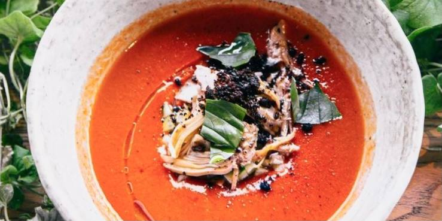Том Ям
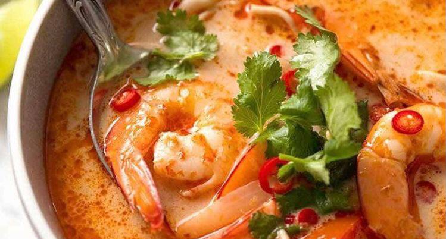Бограч
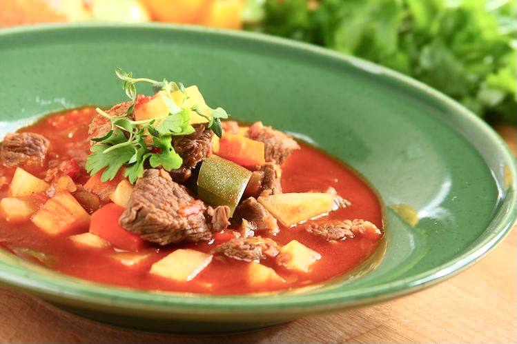Зеленый борщ
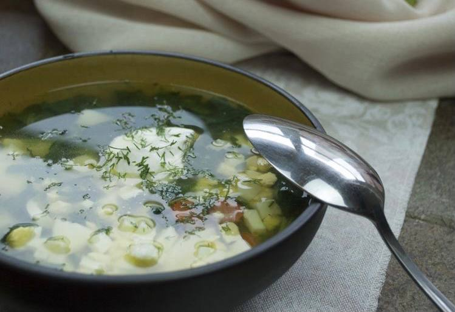Харчо
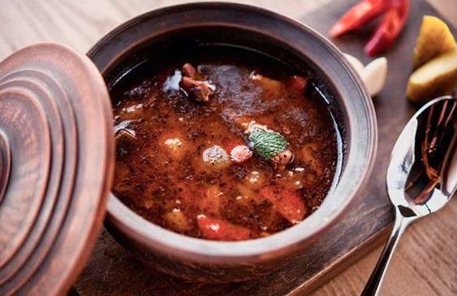Сливочно-грибной суп
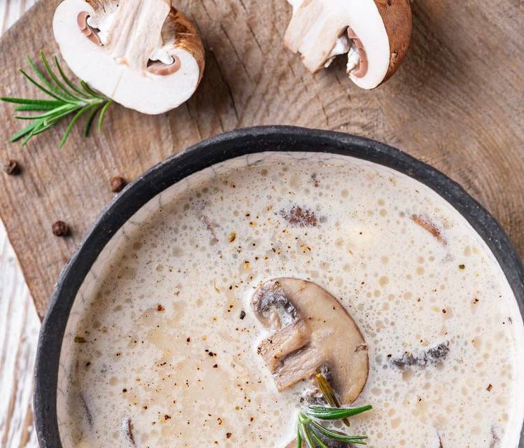Финский суп с сёмгой
Сырный суп
Манговый суп с креветками
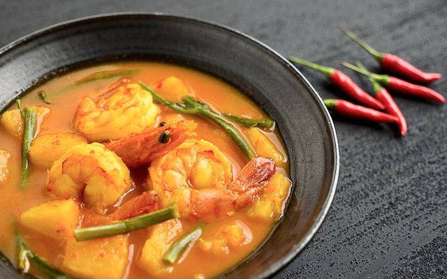P.S. With love to you